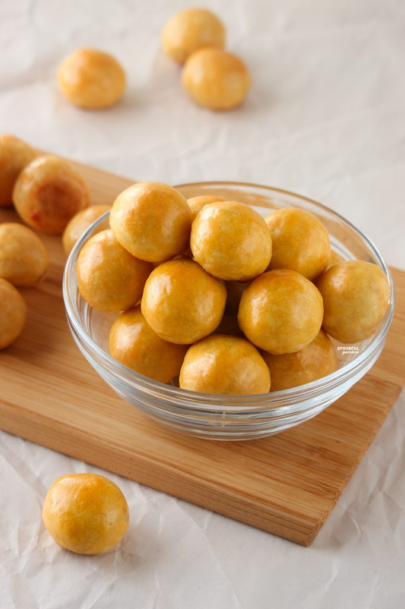
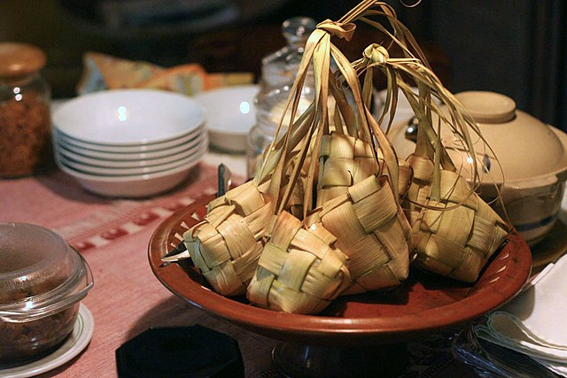
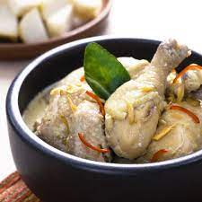

After fasting for an entire month, Muslims around the world celebrate the end of
Ramadan with Eid al-Fitr. This joyous occasion is synonymous with family gatherings and visiting relatives to
strengthen the bonds of friendship and love. A time of great happiness and celebration, Eid al-Fitr is eagerly
anticipated by Muslims everywhere. One of the most enjoyable aspects of this holiday is indulging in the delicious
traditional Eid dishes that are often prepared in Indonesia and other parts of the world. From savory delicacies to
sweet treats, these dishes are a true delight for the senses and bring people together in a spirit of love and
togetherness. So whether you are enjoying the festivities with family or friends, be sure to savor every moment of
this special time and enjoy the rich cultural traditions that make Eid al-Fitr such a beloved holiday around the
world.
Choose your favourite menu:
RECIPE COURTESY OF NASTAR COOKIES

You must be familiar with cheese nastar. Nastar
is a type of pastry made from
flour, butter, eggs, and pineapple jam as a filling. These cookies are named after Dutch, namely ananas and
tarts. The shape is very typical that is round with a diameter of about 2 cm which is decorated with a clove
stem at the top end. Today, cheese nastar doesn’t only contain pineapple jam. There are various variations such
as strawberry jam, pineapple, blueberries, and others. Not only on Eid al-Fitr, Nastar also exists during the
celebration of religious holidays until the Chinese New Year. Since the Eid day is approaching, here is a cheese
nastar recipe that you can try to make at home
Ingredients:
500 g pineapple without peels
3 g whole cloves *optional or adjust to taste
1 cinnamon stick *optional or adjust to taste
150 g granulated sugar
37 g unsalted butter
37 g margarine
30 g icing sugar
1 large egg yolk
15 g custard powder *can replace with cornstarch
120 g all-purpose flour
1 large egg yolk
15 ml (1 tbsp) vegetable oil
5 ml (1 tsp) sweetened condensed milk
Directions
Grate the pineapple or blend it with a food processor. Transfer the shredded pineapple and its juice along with
cinnamon stick and cloves into a heavy-bottom pan. Cook over medium heat and stir occasionally until the liquid is
gone.
Add sugar and continue cooking until it has a thick jam consistency but with no liquid. Keep stirring towards the
end so it does not burn.
Remove from the pan and cool it to room temperature. Cover and refrigerate for at least 30 minutes (up to a
week). It will become easier to handle and less sticky.
Divide the pineapple jam evenly into 32 pieces (6g each). Roughly roll each into a ball. Refrigerate until
needed.
RECIPE COURTESY OF KETUPAT

Rice cakes are popular sides made of rice that often accompany Indonesian savory
dishes, such as sate, gado-gado, ketoprak, lontong sayur, and many other dishes. For festive occasions, we
usually have ketupat or rice cakes wrapped in woven palm leave pouches in the shape of diamond. For daily meals,
lontong is more popular, which is rice cakes wrapped in banana leave pouches in the shape of a tube. Both are
quite tricky to make, though there are now lontong moulds that greatly increase the chance of success in lontong
making. As for ketupat, well, I won’t even bother trying, better leave them to the professionals and buy them
ready made
Ingredients:
2 cups jasmine rice
1/4 teaspoon salt
4 cups water
Tools:
rice cooker
loaf pan
saran plastic wrap
Directions
Wash and drain rice. Then place the rice, salt, and water in a rice cooker, and cook until rice cooker turns to
"warm".
Open the lid, and with the rice paddle (this usually comes with your rice cooker) or a spatula, fluff and press
the rice. The cooked rice for making rice cake should be much wetter than typical steamed rice.
Line a loaf pan with saran plastic wrap. Transfer the still warm rice to the pan, press with rice paddle or
spatula as you transfer the rice. Once all the rice has been transfer, cover the the top surface with another
piece of saran wrap and flatten the surface while keep pressing.
Once the rice is as packed as it can be, poke the top saran plastic wrap with a skewer to create holes for steam
to escape.
Let the rice cake cools, you can speed up the process by cooling it in the refrigerator.
Once it has completely cooled, remove rice cake from the mould, remove the plastic wrap, and cut into 1 inch
cubes. Serve with your favorite savory dish.
RECIPE COURTESY OF OPOR AYAM

Opor Ayam is an Indonesian chicken dish cooked in coconut milk with spices and
herbs. It tastes delicately rich with fragrant herbs.
Unlike many Indonesian dishes, this dish doesn’t use chillies or any hot spices. Therefore, it is often served
with Sambal on the side for those who love chillies and heat.
Ingredients:
¼cup coriander seeds
3tablespoons coconut oil
10small shallots, sliced
Kosher salt, to tastes
15garlic cloves
5candlenuts (or 5 to 10 macadamia nuts)
2 to 31-inch pieces kaempferia galanga root, peeled (optional)
½tablespoon white peppercorns
13-inch piece ginger, peeled and lightly smashed to loosen the fibers
13-inch piece galangal, peeled and lightly smashed to loosen the fibers
5lemongrass stalks, trimmed, smashed and tied into knots
10 to 15fresh or dried salam leaves (Indonesian bay leaves)
20fresh makrut lime leaves
1tomato, chopped (or 1 cup cherry tomatoes)
18.5-ounce can coconut milk
¾cup chicken stock
3pounds bone-in chicken pieces
Directions
In a dry skillet over medium-high heat, toast the coriander seeds for 2 to 3 minutes. Let cool, then grind in a
spice grinder.
In a large sauté pan, heat 2 tablespoons of the coconut oil over medium heat. Add the shallots and a generous
pinch of salt and cook, stirring often, until browned, about 10 minutes. Remove shallots to a food processor and
set aside. Add the garlic cloves and candlenuts to the same pan and cook, stirring constantly to prevent burning,
until deep golden brown, 2 to 3 minutes. Add the garlic and candlenuts to the shallots in the food processor along
with the kaempferia galanga root, white pepper and 2 tablespoons water; purée into a paste.
Heat the remaining 1 tablespoon coconut oil in the sauté pan over medium heat and add the ginger, galangal,
lemongrass, salam leaves and lime leaves, scrunching the lime leaves in your hands as you drop them into the pot.
Allow to cook until the ingredients start to smell less intense and raw, stirring occasionally, 5 to 7 minutes.
Stir the ground coriander seeds, shallot paste mixture and tomato into the pan. Reduce the heat to low and slowly
stir in the coconut milk, a little at a time, to keep the sauce from breaking. When all the coconut milk is
incorporated and the mixture is gently simmering, add the chicken stock. Nestle the chicken into the pan and spoon
some of the sauce over the top. Cover and cook on low heat for about 40 minutes, or until the chicken is cooked
through and the dish is aromatic. You may have to adjust the heat to keep the mixture at a gentle simmer. (Do not
boil.) Season to taste with salt. Before serving, remove the galangal, ginger, lemongrass, salam and makrut
leaves. Serve with rice.
RECIPE COURTESY OF RENDANG
Rendang is a rich dish of meat that has been slow cooked and braised in a coconut
milk seasoned with a herb and spice mixture over a period of several hours until the liquids evaporate and the
meat turns dark brown and tender, becoming caramelized and infused with rich flavors.
Ingredients:
3 tbsp vegetable oil
2kg beef shin or skirt, cut into bite-sized cubes
2 lemongrass stalks, bashed (see 'Tip' for how to prepare)
2 x 400ml cans coconut milk
4 tbsp desiccated coconut
2 kaffir lime leaves, torn
1 ½ tbsp chicken stock powder (we used one from an Asian supermarket)
2 tbsp tamarind paste
1 tsp golden caster sugar
¼ tsp salt
Directions
Wash and drain rice. Then place the rice, salt, and water in a rice cooker, and cook until rice cooker turns to
"warm".
For the paste, soak the chillies in boiling water for 15 mins. Drain, remove seeds and whizz with the rest of the
paste ingredients in a small food processor until smooth.
Firstly, you make the spice paste by grinding the onions, chilies, ginger, galangal, cumin, and coriander into a
paste using a pestle and mortar or a food processor/ blender. Then, place the beef chunks, the spice paste, and
the rest of the ingredients in a large cooking pan. Give it a good stir and start cooking at medium-high heat. You
can put the lid on to quicken the process.
Continue cooking until the liquid (coconut milk and meat juice) reaches the boiling point. Then turn the heat
down and cook further at low heat with the lid on. So it’s kinda slow cooking.
Take care and keep checking every now and again. Make sure you stir it every so often to prevent it from getting
burned at the bottom of the pan.
After about an hour, the curry gravy should get thickened and look shiny thanks to the coconut milk. And the meat
should be fully cooked and quite tender. At this point, you can stop cooking and enjoy it with a little bit of
gravy, if you like.
If you want a proper dry-ish black rendang, keep cooking at low heat with the lid on until the gravy evaporates
and turns caramelized. Don’t forget to keep turning and stirring, especially when the liquid starts to dry up.